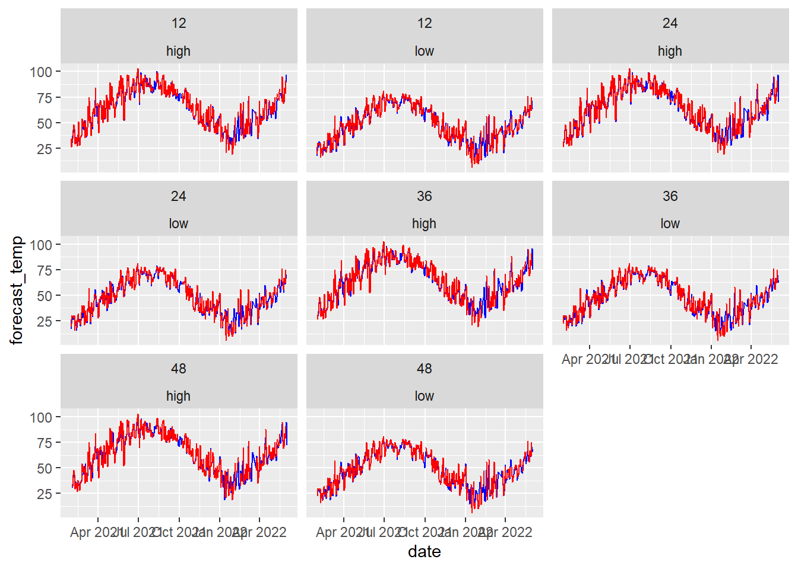
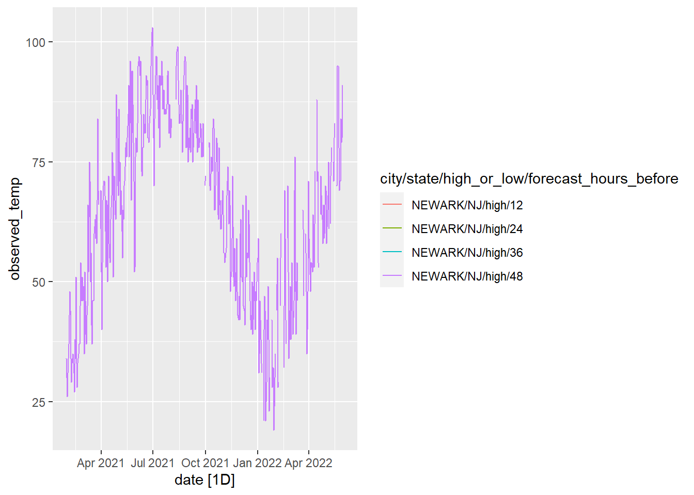
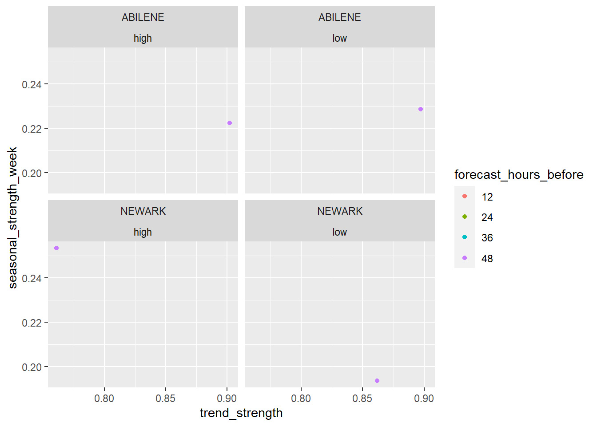
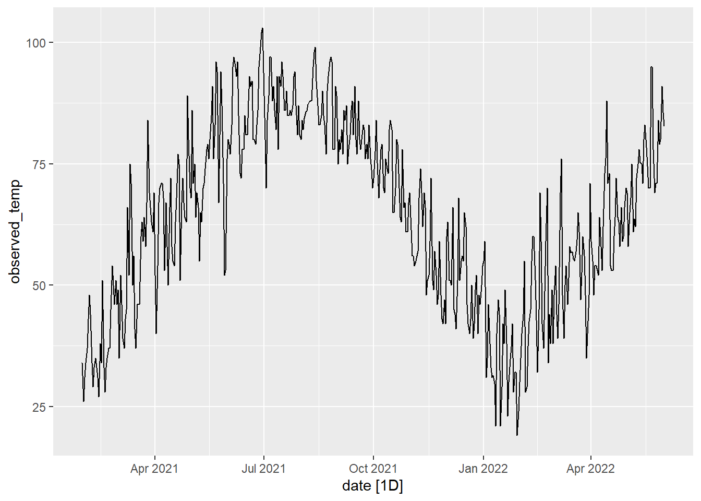
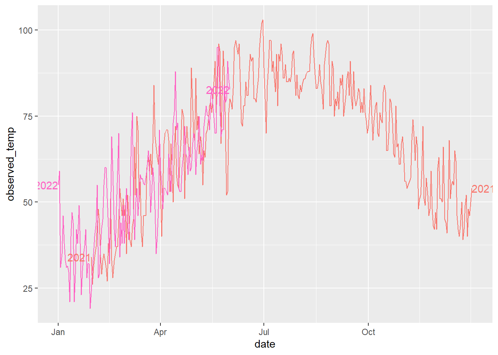
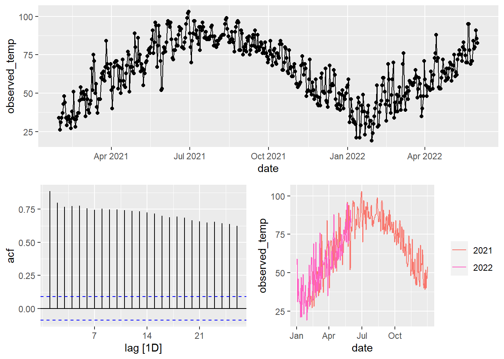
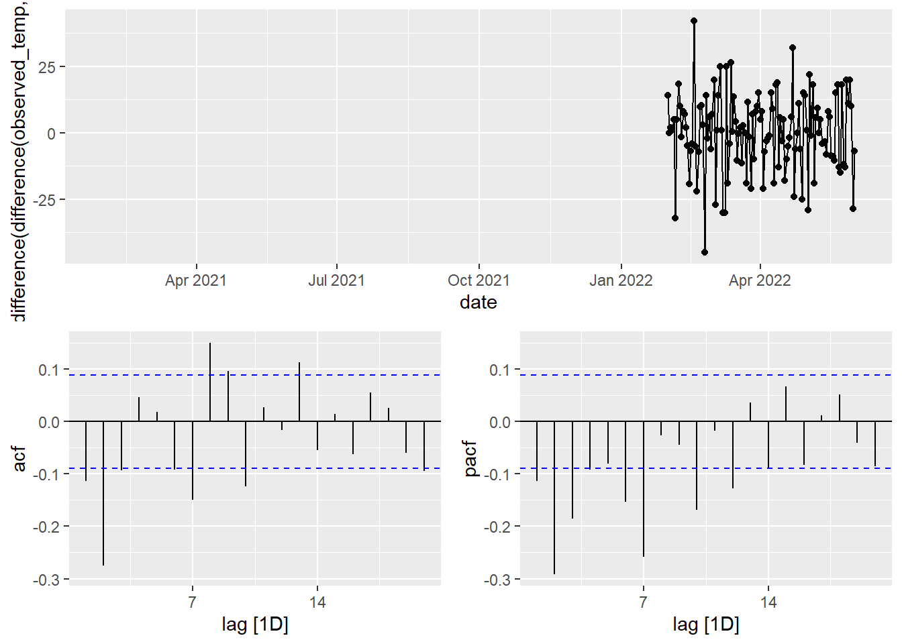

library(tidytuesdayR)
library(tidyverse)
library(skimr)# tt <- tt_load("2022-12-20")
#
# tt
#
# tt %>% map(glimpse)
weather_forecasts <- read_csv("https://raw.githubusercontent.com/rfordatascience/tidytuesday/master/data/2022/2022-12-20/weather_forecasts.csv")
cities <- read_csv("https://raw.githubusercontent.com/rfordatascience/tidytuesday/master/data/2022/2022-12-20/cities.csv")
outlook_meanings <- read_csv("https://raw.githubusercontent.com/rfordatascience/tidytuesday/master/data/2022/2022-12-20/outlook_meanings.csv")
skim(weather_forecasts)| Name | weather_forecasts |
| Number of rows | 651968 |
| Number of columns | 10 |
| _______________________ | |
| Column type frequency: | |
| character | 5 |
| Date | 1 |
| numeric | 4 |
| ________________________ | |
| Group variables | None |
Variable type: character
| skim_variable | n_missing | complete_rate | min | max | empty | n_unique | whitespace |
|---|---|---|---|---|---|---|---|
| city | 0 | 1.00 | 4 | 15 | 0 | 160 | 0 |
| state | 0 | 1.00 | 2 | 2 | 0 | 53 | 0 |
| high_or_low | 0 | 1.00 | 3 | 4 | 0 | 2 | 0 |
| forecast_outlook | 37875 | 0.94 | 3 | 6 | 0 | 23 | 0 |
| possible_error | 0 | 1.00 | 4 | 16 | 0 | 4 | 0 |
Variable type: Date
| skim_variable | n_missing | complete_rate | min | max | median | n_unique |
|---|---|---|---|---|---|---|
| date | 0 | 1 | 2021-01-30 | 2022-06-01 | 2021-09-30 | 488 |
Variable type: numeric
| skim_variable | n_missing | complete_rate | mean | sd | p0 | p25 | p50 | p75 | p100 | hist |
|---|---|---|---|---|---|---|---|---|---|---|
| forecast_hours_before | 0 | 1.00 | 30.00 | 13.42 | 12 | 21 | 30 | 39.00 | 48.0 | ▇▇▁▇▇ |
| observed_temp | 47744 | 0.93 | 57.56 | 21.81 | -47 | 42 | 59 | 74.00 | 122.0 | ▁▁▆▇▁ |
| forecast_temp | 37313 | 0.94 | 57.36 | 21.82 | -41 | 42 | 59 | 74.00 | 118.0 | ▁▁▆▇▂ |
| observed_precip | 50416 | 0.92 | 0.10 | 0.32 | 0 | 0 | 0 | 0.02 | 12.4 | ▇▁▁▁▁ |
##NEEDS WORK MAYBE DIVE DEEPER INTO ONE RELATIONSHIP
weather_forecasts %>% View()
weather_forecasts %>%
filter(!is.na(forecast_temp)) |>
filter(state == "NJ", city == "NEWARK") %>%
ggplot() +
geom_line(aes(date, forecast_temp), color = "blue") +
geom_line(aes(date, observed_temp), color = "red") +
scale_color_brewer() +
facet_wrap(~ forecast_hours_before + high_or_low)Warning: Removed 2 rows containing missing values (`geom_line()`).
weather_forecasts |>
filter(city == "NEWARK", state == "NJ")# A tibble: 3,904 × 10
date city state high_or_low forecas…¹ obser…² forec…³ obser…⁴ forec…⁵
<date> <chr> <chr> <chr> <dbl> <dbl> <dbl> <dbl> <chr>
1 2021-01-30 NEWARK NJ high 48 34 NA 0 <NA>
2 2021-01-30 NEWARK NJ high 36 34 NA 0 <NA>
3 2021-01-30 NEWARK NJ high 24 34 NA 0 <NA>
4 2021-01-30 NEWARK NJ high 12 34 31 0 SUNNY
5 2021-01-30 NEWARK NJ low 48 19 NA 0 <NA>
6 2021-01-30 NEWARK NJ low 36 19 NA 0 <NA>
7 2021-01-30 NEWARK NJ low 24 19 17 0 SUNNY
8 2021-01-30 NEWARK NJ low 12 19 17 0 MOCLDY
9 2021-01-31 NEWARK NJ high 48 26 NA 0.41 <NA>
10 2021-01-31 NEWARK NJ high 36 26 30 0.41 MOCLDY
# … with 3,894 more rows, 1 more variable: possible_error <chr>, and
# abbreviated variable names ¹forecast_hours_before, ²observed_temp,
# ³forecast_temp, ⁴observed_precip, ⁵forecast_outlookweather_forecasts |>
filter(city == "NEWARK", state == "NJ", !is.na(forecast_temp)) |>
filter(high_or_low == "high") |>
mutate(error = forecast_temp - observed_temp) |>
filter(!is.na(error)) |>
group_by(forecast_hours_before) |>
summarise(MAE = mean(abs(error)))# A tibble: 4 × 2
forecast_hours_before MAE
<dbl> <dbl>
1 12 1.97
2 24 2.24
3 36 2.46
4 48 2.60Time Series
tsibble
how do our predictions using esm or arima do against the national weather service?
library(tsibble)
Attaching package: 'tsibble'The following objects are masked from 'package:base':
intersect, setdiff, unionlibrary(fable)Loading required package: fabletoolslibrary(feasts)
library(lubridate)Loading required package: timechange
Attaching package: 'lubridate'The following object is masked from 'package:tsibble':
intervalThe following objects are masked from 'package:base':
date, intersect, setdiff, unionforecast_tsbl <- weather_forecasts |>
mutate(city = factor(city),
state = factor(state),
high_or_low = factor(high_or_low),
forecast_hours_before = factor(forecast_hours_before)) |>
as_tsibble(key = c(city, state, high_or_low, forecast_hours_before), index = date)
forecast_tsbl |> group_by_key() |>
slice(n()-12:0) |>
View()
train <- forecast_tsbl[]#impute
forecast_tsbl |> filter(is.na(observed_temp))# A tsibble: 47,744 x 10 [1D]
# Key: city, state, high_or_low, forecast_hours_before [1,336]
date city state high_or_low foreca…¹ obser…² forec…³ obser…⁴ forec…⁵
<date> <fct> <fct> <fct> <fct> <dbl> <dbl> <dbl> <chr>
1 2021-08-04 ABILENE TX high 12 NA 90 NA PTCLDY
2 2021-08-05 ABILENE TX high 12 NA 91 NA TSTRMS
3 2021-08-06 ABILENE TX high 12 NA 95 NA SUNNY
4 2021-08-07 ABILENE TX high 12 NA 96 NA SUNNY
5 2021-08-08 ABILENE TX high 12 NA 99 NA SUNNY
6 2021-08-09 ABILENE TX high 12 NA 100 NA SUNNY
7 2021-09-29 ABILENE TX high 12 NA 92 NA TSTRMS
8 2021-10-02 ABILENE TX high 12 NA 82 NA PTCLDY
9 2021-10-04 ABILENE TX high 12 NA 86 NA SUNNY
10 2021-10-06 ABILENE TX high 12 NA 86 NA PTCLDY
# … with 47,734 more rows, 1 more variable: possible_error <chr>, and
# abbreviated variable names ¹forecast_hours_before, ²observed_temp,
# ³forecast_temp, ⁴observed_precip, ⁵forecast_outlookforecast_tsbl |> filter(is.na(forecast_temp))# A tsibble: 37,313 x 10 [1D]
# Key: city, state, high_or_low, forecast_hours_before [1,336]
date city state high_or_low foreca…¹ obser…² forec…³ obser…⁴ forec…⁵
<date> <fct> <fct> <fct> <fct> <dbl> <dbl> <dbl> <chr>
1 2021-02-17 ABILENE TX high 12 20 NA 0 <NA>
2 2021-08-22 ABILENE TX high 12 97 NA 0 <NA>
3 2021-08-23 ABILENE TX high 12 97 NA 0 <NA>
4 2021-08-24 ABILENE TX high 12 98 NA 0 <NA>
5 2021-09-30 ABILENE TX high 12 88 NA 2.18 <NA>
6 2021-10-03 ABILENE TX high 12 85 NA 0 <NA>
7 2021-10-05 ABILENE TX high 12 87 NA 0 <NA>
8 2021-10-07 ABILENE TX high 12 93 NA 0 <NA>
9 2021-11-11 ABILENE TX high 12 68 NA 0 <NA>
10 2022-01-10 ABILENE TX high 12 NA NA NA <NA>
# … with 37,303 more rows, 1 more variable: possible_error <chr>, and
# abbreviated variable names ¹forecast_hours_before, ²observed_temp,
# ³forecast_temp, ⁴observed_precip, ⁵forecast_outlookforecast_tsbl |>
filter(city == "NEWARK") |>
select(observed_temp, forecast_temp) |>
#keys and index are automatically kept even when not specified
summarise(avg_obs_temp = mean(observed_temp, na.rm = TRUE),
avg_pred_temp = mean(forecast_temp, na.rm = TRUE))# A tsibble: 488 x 3 [1D]
date avg_obs_temp avg_pred_temp
<date> <dbl> <dbl>
1 2021-01-30 26.5 21.7
2 2021-01-31 24 27.4
3 2021-02-01 30.5 29.5
4 2021-02-02 31.5 30.8
5 2021-02-03 33.5 31.4
6 2021-02-04 36.5 35.8
7 2021-02-05 38 36.1
8 2021-02-06 37 34.4
9 2021-02-07 25 26.2
10 2021-02-08 24.5 26.1
# … with 478 more rowsforecast_tsbl |>
filter(city == "NEWARK", high_or_low == "high") |>
select(observed_temp, forecast_temp) |>
autoplot(observed_temp)Warning: Removed 8 rows containing missing values (`geom_line()`).
forecast_tsbl |>
filter(city %in% c("NEWARK", "ABILENE")) |>
features(observed_temp, feat_stl) |>
ggplot(aes(x = trend_strength, y = seasonal_strength_week, color = forecast_hours_before)) +
geom_point() +
facet_wrap(~city + high_or_low)
## Fit an ARIMA model on the data with missing values and interpolate
#Observed temp
forecast_fill <- forecast_tsbl |>
filter(
city == "NEWARK",
state == "NJ"
) |>
model(
ARIMA(observed_temp)
) |>
interpolate(forecast_tsbl)
# forecast_fill |> (\(x) {sum(is.na(x$observed_temp))})()
# forecast_fill |> with(sum(is.na(observed_temp)))
sum(is.na(forecast_tsbl$observed_temp))[1] 47744sum(is.na(forecast_fill$observed_temp))[1] 0#STL Decomposition
forecast_fill |>
gg_season(observed_temp)
forecast_fill |>
ACF(observed_temp) |>
autoplot()
forecast_fill |>
model(
STL(observed_temp ~ trend(window = 7) + season(period = 365.24, window = 11),
robust = FALSE)
) |>
components() |>
autoplot()
forecast_fill |>
model(
STL(observed_temp ~ trend(window = 7) + season(period = 365.24, window = 13))
) |>
components() |>
autoplot()
fit_ets <- forecast_fill |>
model(
auto_ets = ETS(observed_temp)
)
fit_ets |> filter(high_or_low == 'high', forecast_hours_before == 12) |> report()Series: observed_temp
Model: ETS(A,N,N)
Smoothing parameters:
alpha = 0.5071176
Initial states:
l[0]
32.00149
sigma^2: 75.0504
AIC AICc BIC
5132.132 5132.181 5144.703 fit_ets |> filter(high_or_low == 'high', forecast_hours_before == 12) |> forecast(h = "30 days") |> autoplot(forecast_fill |> filter(high_or_low == 'high', forecast_hours_before == 12), level = NULL)
newark_high_feats <- forecast_fill |>
filter(high_or_low == "high") |>
features(observed_temp, feature_set(pkgs = "feasts"))Warning: `n_flat_spots()` was deprecated in feasts 0.1.5.
ℹ Please use `longest_flat_spot()` instead.
ℹ The deprecated feature was likely used in the fabletools package.
Please report the issue at <https://github.com/tidyverts/fabletools/issues>.newark_high_feats |>
select(starts_with("season"), forecast_hours_before) |>
mutate(seasonal_peak_week)# A tibble: 4 × 6
seasonal_strength_week seasonal_peak_week seasonal_t…¹ seaso…² seaso…³ forec…⁴
<dbl> <dbl> <dbl> <dbl> <dbl> <fct>
1 0.186 5 1 0.745 0.100 12
2 0.186 5 1 0.745 0.100 24
3 0.186 5 1 0.745 0.100 36
4 0.186 5 1 0.745 0.100 48
# … with abbreviated variable names ¹seasonal_trough_week, ²season_acf1,
# ³season_pacf, ⁴forecast_hours_beforenewark_high <- forecast_fill |>
filter(high_or_low == "high", forecast_hours_before == 12)
newark_high |> autoplot(observed_temp)
newark_high |> gg_season(observed_temp, labels = "both")
newark_high |> gg_tsdisplay()Plot variable not specified, automatically selected `y = observed_temp`
newark_high |> gg_tsdisplay(difference(observed_temp, 365) |> difference(),
plot_type = "partial")Warning: Removed 366 rows containing missing values (`geom_line()`).Warning: Removed 366 rows containing missing values (`geom_point()`).